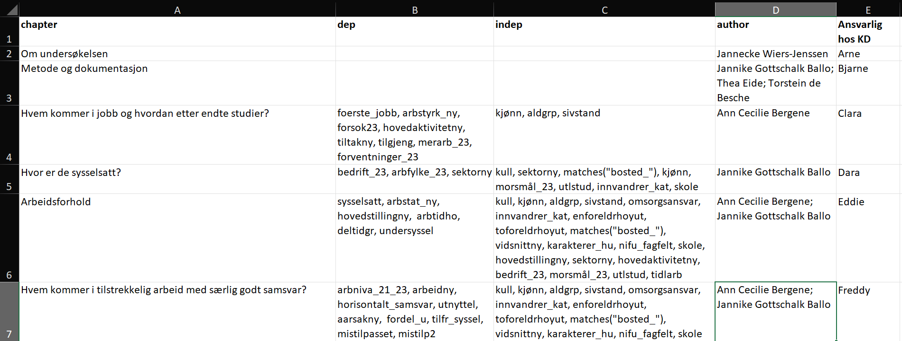

Chapter overview
The chapter overview can be made when variable names have been determined.
Each report must have a table, where each line is a chapter. This is typically an Excel file that is easy to edit manually, or create a data frame in R.

The first row contains column headings. It must contain the following columns (as a minimum, may contain others as well):
"chapter": chapter heading, without numbering. Preferably not very long."dep": dependent variables. You will be able to get univariates for variables you list here. If you want univariates for what you would consider to be independent variables, you must also list these here (experimental, not tested yet).This (and indep below) follows the so-called tidyselect syntax. That is, you write in a cell like this:
matches('^s_3'), s_405, s_406. Note that variables (or sets of variables) are separated with commas. Note that the way you would write matches() in Stata would not work (s_3*).
May also contain:
"indep": independent variables to break down the dependent variables on."author": Author, full name. If more, then separate with a semicolon.Or other variables you may have - can be fine if you need to use the same chapter overview to keep track of who at the client is responsible for the topic, where in the questionnaire the questions are, etc. These are ignored by saros.
saros::draft_report() will produce a log of which variables exist in the dataset but are not used in chapter overview, auxiliary_variables or mesos_var.